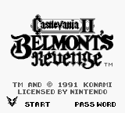
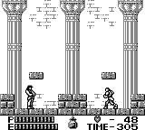

|
Castlevania 2
: Belmont's Revenge
เกม Castlevania 2 : Belmont's Revenge
++ Game :: Castlevania 2 : Belmont's Revenge
++ เครื่องเล่น :: Gameboy
++ โดย :: Pratya (pipe)
++ E-mail :: Pratya_pi@hotmail.com , pipe@nakhon.net
++ จาก :: http://home.nakhon.net/pipe
Title

Stage Select
เมื่อเข้าสู่เกม จะมีปราสาทให้เลือกเล่น 4 ปราสาท
สามารถเลือกเล่นปราสาทไหนก่อนหลังก็ได้
เพื่อค้นหา Soleiyu ลูกชายที่หายตัวไป
โดยมีปราสาทให้เลือกดังนี้
- Crystal Castle -
- Cloud Castle -
- Plant Castle -
- Rock Castle -
Crystal Castle
Enemy
ระหว่างทางจะเจอกับศัตรูที่สามารถขว้างมีดโจมตี
วิธีปราบ
ให้เดินเข้าไปอยู่ใกล้ๆ และโจมตี
เมื่อศัตรูกระโดด ให้รีบเดินเข้าไปยังจุดที่มันกระโดดออกมา
เดินสลับไปมา จะสามารถปราบได้อย่างง่ายดาย
Boss
เป็นนักเวทย์ สามารถเรียกสายฟ้าออกมาจากก้อนเมฆได้
วิธีปราบ
เดินหลบไปด้านข้างของจอภาพ
เมื่อนักเวทย์ร่ายเวทย์ก็ให้เดินหนีออกมา
และโจมตีเมื่อนักเวทย์เริ่มปรากฎตัว
Cloud Castle
Boss
เป็นมังกรโครงกระดูก สองตัว
มันจะโจมตีด้วยการยิงกระดูกคอ สลับไปมา
วิธีปราบ
หากเก็บ "ขวาน" มาใช้ จะปราบได้ง่ายขึ้น
Plant Castle
Boss
เป็นรูปปั้นแพะยักษ์ถือสามง่าม 2 ตัว
วิธีปราบ
หากเก็บ "ขวาน" มาใช้ จะปราบได้ง่ายขึ้น
Rock Castle
Boss
เป็นนักรบสวมเกราะ เมื่อโจมตีจนมันใกล้ตาย
มันจะถอดชุดเกราะออก และสามารถกระโดดยิงพลังได้
วิธีปราบ
ร่างแรกใช้แส้ฟาดแล้วเดินหนี
ส่วนร่างสอง ให้ใช้อาวุธขว้างช่วย จะสามารถปราบได้ไม่ยาก
Final Castle
เมื่อปราบ Boss ได้ทั้ง 4 ปราสาทแล้ว จะเจอกับปราสาท Dracula
ซึ่งทางเดินจะแบ่งออกเป็น 2 ช่วง
Dracula Castle
1
Boss
เป็นมังกร โจมตีโดยการดำดิน และพุ่งชน
วิธีปราบ
พยายามเดินให้อยู่ติดขอบจอด้านขวามากที่สุด
เพราะจะโดนฉากเลื่อน ดันให้ไปชนตัวมังกรได้
Dracula Castle
2
Soleiyu

เมื่อขึ้นมาถึงด้านบนของปราสาท จะพบกับ Soleiyu
แต่เขากลับทำร้าย Christopher ซึ่งเป็นพ่อของเขาเอง ???
Boss : Soleiyu
Soleiyu สามารถใช้แส้ฟาดได้ และขว้างดาบได้อีกด้วย
วิธีปราบ
ใช้ความต่างระดับให้เป็นประโยชน์
และสามารถยืนฟาดแส้แลกกันได้เลย
เมื่อปราบได้ Soleiyu จะฟื้นคืนสติ เพราะถูก Dracula ครอบงำ
โดย Soleiyu ได้บอกให้ไปปราบ Dracula ที่ฟื้นขึ้นมาเพราะพลังจากปราสาททั้ง
4 ถูกทำลายลงไป
Boss : Dracula
Dracula จะสร้างสนามพลังออกมารอบๆ ตัว
และยิงออกมาในหลายๆ ทิศทาง
วิธีปราบ
แน่นอนอยู่แล้ว ว่าต้องใช้แส้ฟาด "หัว" ตามระเบียบ
หากมี "ขวาน" ติดตัวมาด้วยจะช่วยได้มาก
พยายามหาพื้นที่ที่เหมาะสมในการฟากแส้
ควรใช้ความต่างระดับของพื้นให้เป็นประโยชน์
และต้องหาจุดปลอดภัย เอาไว้หลบการโจมตีด้วย
Ending
เมื่อปราบ Dracula ได้แล้ว
Soleiyu ก็สามารถเอาชนะพลังด้านมืดได้
และร่วมมือกับ Christopher ต่อสู้กับ Dracula และลูกสมุนต่อไป
|